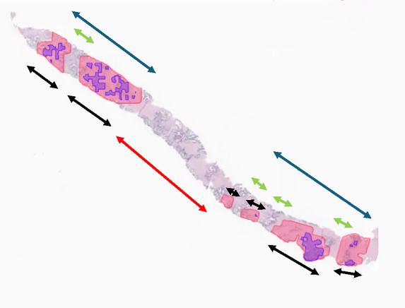

Why is there variation between pathologists measurements?
It is well known that there is considerable inter-rater variability between pathologists for Gleason score or estimation of total tumor or pattern 4 length. This is generally characterized in terms of subjective differences, like how some people prefer Jazz and others prefer classical music. The ProQuant group hypothesizes that the largest component of pathologist variation can be attributed to systematic, identifiable differences in technique.
The slide below shows a biopsy core with pattern 3 shaded red and pattern 4 shaded purple. Both the total length of cancer and the amount of pattern 4 might be estimated differently by different pathologists for any of the following reasons.
Pathologists vary as to the criteria as to what counts as a single focus of cancer. Two areas of cancer separated by a small amount of benign tissue are often considered to constitute one focus. The green lines in the figure represent the length of benign tissue between areas of cancer. Depending on differing criteria for the maximum length of the green lines allowable within a focus, the slide could be read as two foci with lengths indicated by the blue lines or six foci with lengths indicated by the black lines.
Pathologists vary as to how the measure total length of cancer in a core with multiple foci. Some pathologists measure the length of the longest focus, others add up all foci while yet others also include areas between foci, what is known as the “interfocal stroma”. If the core in the figure was considered to be two foci, the length of cancer could be given as the length of the lower blue line, the length of the two blue lines combined or the length of the blue lines plus the length of the red line.
Pathologists vary as to the criteria for including interfocal stroma in cancer length measurement. Some pathologists use absolute length, but vary as to the cut-off. For instance, the length of the red line would be included if it was less than 3mm or, in a different institution, only 1mm. Other pathologists consider the relative length of tumor foci to interfocal stroma, though again, methods differ: one approach is look at the smaller of the two foci (e.g. the red line would be included only if it is less than the shorter of the two blue lines); an alternative is to compare total lengths (e.g. the red line included if it is no more than half the length of the two blue lines combined).
Pathologists vary as to how to measure pattern 4. Once tumor length has been estimated, this needs to be converted into a length of pattern 4. This can be done by estimating the length of each purple areas, or by estimating the percentage of tumor that is pattern 4 and then multiplying by overall tumor length. If the latter method is used, this can be done separately for each focus or overall for a core.
